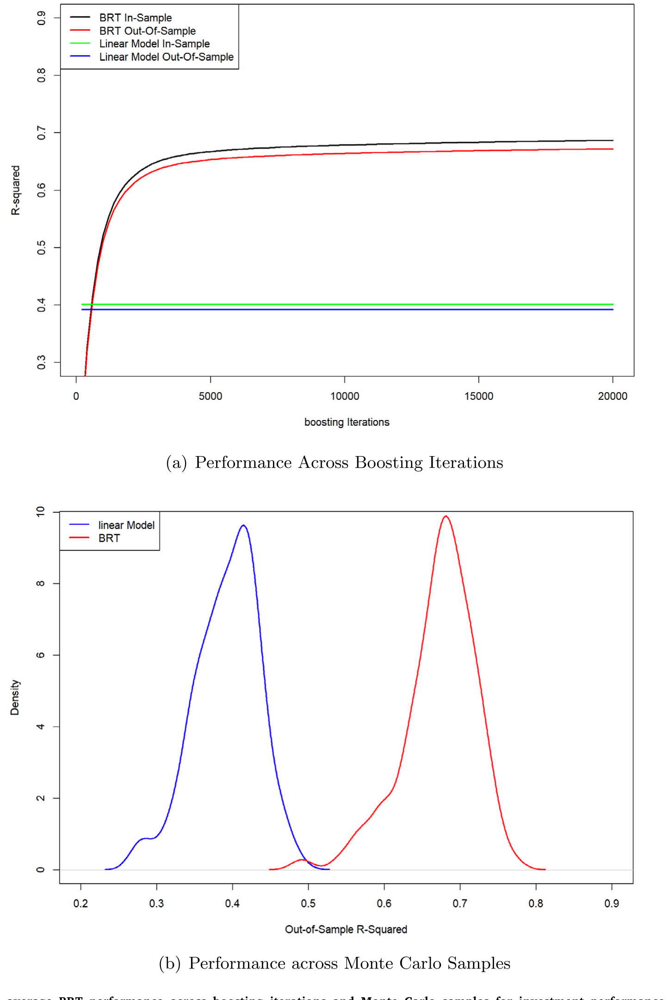
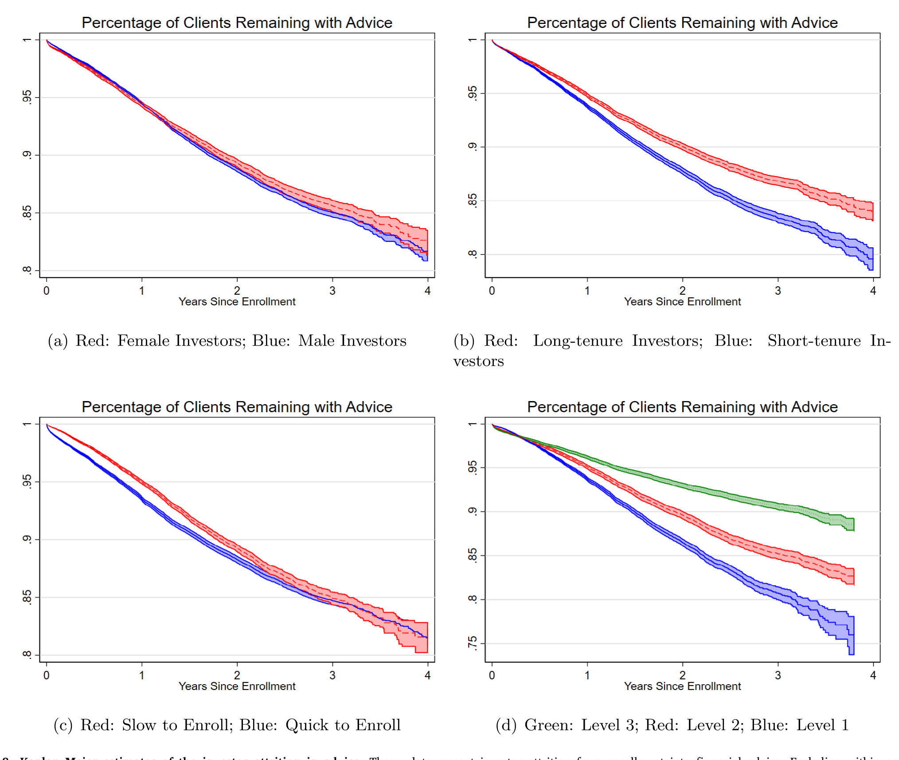
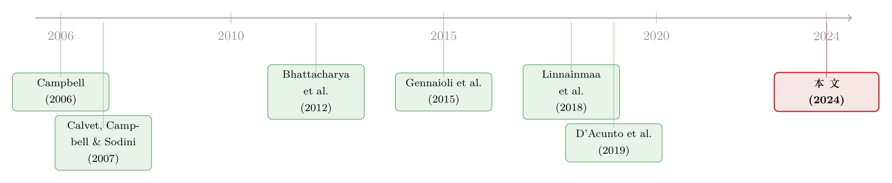

请一个机器人替你理财，到底改变了什么？
本文读的是 Rossi & Utkus (2024, Journal of Financial Economics)：他们拿到全球最大机器人投顾——Vanguard 旗下 Personal Advisor Service (PAS)——超过 5.5 万名「曾经自己炒股」的投资者的完整账户数据，记录了这些人把组合交给算法前后的全部变化，最后落成五个事实。结论的反转之处在于：机器人带来的福利改善，几乎不来自更高的收益，而来自更低的风险、更彻底的分散，以及一个常被忽视的细节——它替你自动下单。
1 引言：你可以把马牵到水边……
金融学里有一句被引用到发腻的话，出自 Bhattacharya 等人 (2012) 对一批德国家庭的实地实验。他们免费、无偏、善意地给散户提供投资建议，结果发现：几乎没人照做。文章的结论酸涩而精准——「你可以把马牵到水边，但没法逼它喝水（You can lead a horse to water, but you cannot make him drink）」。
这句话其实道破了「金融建议」这门生意的根本困境：建议本身可能是对的，但人是不听的。于是一个自然的问题浮出水面——如果建议不只是「说」给你听，而是直接「做」给你看呢？如果有一个系统，不仅告诉你该怎么配，还绕过你这个最不可靠的环节，自己把单子下了，结果会不会不一样？
这正是机器人投顾 (robo-advising) 想回答的问题。但要回答它，你需要一个近乎奢侈的实验场景：一大批本来自己管钱、有真实历史、有真实财富的人，在某个时点把组合交给算法，然后你能看着他们的账户一个月一个月地变。Rossi and Utkus (2024) 拿到的，恰好就是这样一份数据。
2 场景与数据：不是穷人的实验
先把场景讲清楚，因为它决定了这篇文章能问什么、不能问什么。
研究对象是 Vanguard 的 Personal Advisor Service (PAS)。截至 2019 年 2 月，它管理着约 $115 billion 资产，比美国其余所有机器人投顾加起来还多——这是世界上最大的一家。它还是一个「混合式」机器人投顾：投资与再平衡高度自动化，但保留了真人顾问的环节（这个细节后面会反咬一口）。它主推低费率指数基金、极少交易、税务效率与全球分散，收取 0.30% 或更低的顾问费。
样本是 55,202 名「曾经自己做主」的投资者，他们在 2015–2017 年间签约。请注意，这绝不是一群初学者或穷人——他们的中位数组合财富是 $407,652（均值 $723,010），中位数股票仓位 56%，平均年龄 64 岁，平均做了 15 年的自主投资者。换句话说，这是一群有钱、有经验、愿意承担权益风险的「老股民」。这一点很关键：如果连他们都能从机器人那里捞到好处，故事就更有说服力。
数据本身是 Vanguard 的匿名专有数据，配上 CRSP 与 CRSP Mutual Funds（用来获取基金费率、换手率、指数化程度、Lipper 分类等）。观测单位是「投资者—月」，覆盖全部账户类型（应税与 IRA）。
一个必须先说在前面的限制：是否签约机器人，是投资者自己选的（endogenous）。所以全文的结果应被读作描述性而非因果性。作者很坦诚地承认这一点——但他们也提出了一个巧妙的辩护，我们留到最后讲。
3 事实一：机器人到底「动」了什么
签约之后第六个月，这群人的组合发生了什么？答案可以用一连串数字一口气说完，每一个都指向同一个方向——分散化。
- 指数化暴增：投资于指数共同基金的财富占比，从 47% 跳到 81%。
- 本土偏好瓦解：国际市场敞口从 11% 升到 31%，整整三倍。
- 费用腰斩：平均费率从 23 个基点降到 10 个基点，一半都不到。
- 风险结构重置：债券仓位从 25% 升到 39%，现金与货基从 19% 砸到 2%；权益仓位只是温和地从 56% 升到 59%。
- 持仓变干净：人均持有资产数从
10.79降到8.62，分布尾部被显著压平——持仓数的 90 分位从 23 只掉到 15 只。
但比「均值变化」更耐人寻味的，是横截面方差的塌缩——作者称之为「同质化 (homogenization)」。签约前，权益仓位在 10 分位和 90 分位分别是 25% 和 100%（也就是说，有人几乎空仓股票，有人满仓）；签约后，这两个数收敛到 40% 和 85%。机器人不只是把每个人往「更优」推，它还在把所有人往同一种组合里收拢。
这一步本身并不神奇——指数化、降费、全球分散，几乎是任何一本投资学教科书的「标准答案」。真正的问题在下一节：这些「教科书操作」，换算成投资者的福利，到底值多少钱？
4 真正关键的一步：福利从哪里来
这里是全文的枢纽，也是最容易被误读的地方。
直觉上，你会以为「更好的投资建议 = 更高的收益」。但本文的结果恰恰相反。作者跟随 Calvet 等人 (2007) 的做法，以 MSCI World Index 为基准估计每个投资者的夏普比率 (Sharpe ratio)。结果是：
- 签约后夏普比率提升
16.1%； - 但这几乎全部来自风险下降——组合总风险降低
15.8%，异质性风险 (idiosyncratic risk) 降低27.6%； - 而期望收益，签约后其实略有下降。
换句话说，机器人没让你赚得更多，它让你输得更少、更稳。收益甚至牺牲了一点点，但因为风险（尤其是那部分不该被市场补偿的异质性风险）被砍得更狠，风险调整后的表现明显改善。这个改善在控制了个体与时间固定效应的面板回归里依然显著，且从签约后第一个月就出现，并持续下去。
可问题来了：夏普比率高一点，凭什么就等于「福利」高？这需要把背后的逻辑显式地推一遍——这也是本文福利论证真正的地基。
4.1 为什么夏普比率就是福利：CARA-正态的小推导
设投资者拥有常绝对风险厌恶 (constant absolute risk aversion, CARA) 效用 \(U(W) = -e^{-\gamma W}\)，其中 \(\gamma\) 是绝对风险厌恶系数。她可以把财富的一个比例 \(\alpha\) 配置到某个风险组合上，该组合的超额收益服从正态分布，超额期望为 \(\mu_p - r_f\)、方差为 \(\sigma_p^2\)。
利用「正态随机变量的指数期望」这一性质——对 \(x \sim N(m, v)\) 有 \(\mathbb{E}[-e^{-\gamma x}] = -e^{-\gamma(m - \frac{\gamma}{2}v)}\)——她在配置 \(\alpha\) 下的确定性等价 (certainty equivalent) 为：
$$CE(\alpha) = \alpha(\mu_p - r_f) - \frac{\gamma}{2}\,\alpha^2 \sigma_p^2$$
这一步的直觉是：第一项是承担风险换来的期望回报，第二项是风险带来的效用惩罚，惩罚随风险厌恶 \(\gamma\) 和组合方差 \(\sigma_p^2\) 上升。对 \(\alpha\) 求一阶条件：
$$\mu_p - r_f - \gamma\,\alpha\,\sigma_p^2 = 0 \quad\Longrightarrow\quad \alpha^* = \frac{\mu_p - r_f}{\gamma\,\sigma_p^2}$$
把最优杠杆 \(\alpha^*\) 代回 \(CE\)，分散化的全部价值就坍缩成一个极其干净的表达式：
这个式子说明了一件至关重要的事：对一个能自由调节杠杆的 CARA 投资者来说，她的福利只取决于组合的夏普比率——而且是单调递增的。组合长什么样、持有多少只股票、是不是指数基金，统统不重要，重要的只有 \(S_p\)。于是，「夏普比率提升 16.1%」就不再是一个抽象的统计量，而是实打实的福利改善。这也正是为什么作者敢说：机器人虽然略微压低了期望收益，却因为更大幅度地压低了波动与异质性风险，从而提升了 CARA 投资者的福利。
这里也顺带解释了为什么「异质性风险下降 27.6%」是最漂亮的那个数字。异质性风险是不被市场补偿的风险——承担它，只增加 \(\sigma_p\)、不增加 \(\mu_p - r_f\)，纯粹拉低夏普比率。机器人通过分散化把它砍掉，等于免费提升了 \(S_p\)。这正是「分散化是唯一的免费午餐」这句老话的精确版本。
5 谁受益最多：让机器学习来回答
把所有人平均在一起，得到的是「机器人很好」。但接着，一个自然的问题是：好处是均匀分布的吗？ 显然不是。一个本来就满仓指数基金、全球分散的老手，机器人能帮他的余地很小；而一个重仓单一股票、从不出海的人，改善空间巨大。
要刻画这种异质性，作者没有用标准的线性回归，而是请来了一种机器学习方法——提升回归树 (Boosted Regression Trees, BRT)。他们用 14 个在签约之前测得的协变量（人口、组合、交易特征），去非参数地解释「签约前后投资表现改善幅度」的横截面差异。
最重要的几个预测变量是：投资者的权益仓位、现金仓位、共同基金占比、国际基金敞口。它们共同勾勒出一张清晰的脸——受益最多的人，恰恰是那些签约前权益敞口低、不做国际分散、不广泛持有指数基金的人。这与事实三完全吻合。
但这里有个方法论上的反转，值得单独点出：这种关系是非线性、甚至非单调的。作者明确警告，在这种场景下「标准的统计方法可能给出错误的结论」。更狠的一句是——BRT 的样本外表现，竟然好过线性模型的样本内表现。换句话说，线性模型在它自己最有利的主场，都打不过机器学习在客场的发挥。为了证明这不是过拟合，他们做了样本外交叉验证：BRT 在训练集上不过拟合，样本内外都稳定地优于同样协变量下的线性模型。

Figure 6: In- and out-of-sample average BRT performance across boosting iterations and Monte Carlo samples for investment performance changes before a
（关于「把机器学习塞进组合优化」这条线，可参见《把优化器塞进神经网络：当机器学习撞上 Markowitz》；本文则是把机器学习用在了「谁该被建议」的识别上。）
6 时间、黏性，与一个关于自选择的辩护
故事到这里还差两块拼图，它们一起构成了本文最后、也最微妙的论证。
事实四：机器人买回了你的时间。 签约后，投资者花在管理组合上的精力明显下降。有意思的是，这不是因为他们对自己的财务状况变得漠不关心——恰恰相反，他们在需要时反而更频繁地登录去快速查看组合净值。下降的是「做投资决策」这件事本身耗费的时间。作者把节省下来的时间折算为大约每人每年 6 小时，按价值算约 $450/年。这笔账提醒我们：理财顾问的价值，有一部分根本不在收益里，而在「省心」里。
（把「风险厌恶」和「嫌麻烦」分开来量，是家庭金融近年的一条重要线索，可参见《94% 的人其实都想买股票——把「风险厌恶」和「麻烦」分开来量》。机器人投顾，某种意义上正是在直接降低那个「麻烦」成本。）
事实五：受益最多的人，最愿意进来，也最不愿离开。 那些作为自主投资者时权益敞口低、不做国际分散、付着高费用、组合波动大的人——也就是模型预测能从机器人那里捞到最多好处的人——最可能签约，也最不可能退出。真人顾问的介入，似乎也在提高签约率、降低流失率上扮演了角色。

Figure 8: Kaplan Meier estimates of the investor attrition in advice. These plots present investor attrition from enrollment into financial advice. Ea
现在回到那个悬而未决的内生性问题。签约是自选择的，这本该让我们对所有结果都打个问号。但作者给出了一个值得玩味的辩护：投资者签约之后的组合配置，是机械的——它由一套投资者事前并不知晓的专有算法决定，从签约那刻起自动交易。因此，签约这个决定本身固然内生，但「签约之后组合变成什么样、表现如何」，几乎与投资者的个体特征和个体冲击无关。一旦你把马牵到了水边，喝水这个动作，是机器人替它完成的。这恰好呼应了开篇 Bhattacharya 等人 (2012) 的困境——自动执行，才是任何金融建议有效的关键，无论它来自真人还是机器。
7 文献脉络
把这篇文章放回它生长的土壤里，线索其实很清晰。
最上游是 Campbell (2006) 的「家庭金融 (household finance)」纲领：金融市场只在家庭真正参与、并持有分散良好的组合时才惠及他们。可现实是，散户普遍欠分散——于是 Calvet 等人 (2007) 提出了一套用夏普比率度量「欠分散的福利损失」的框架，本文的福利测量正是直接继承自它。
接着是「建议为什么没用」的诘问：Bhattacharya 等人 (2012) 证明免费建议鲜有人听；Linnainmaa 等人 (2018, 2021) 进一步指出，传统真人顾问不仅贵、其客户增加的风险承担不足以补偿成本，顾问自己还可能怀着「被误导的信念」、采取一刀切的做法。Gennaioli 等人 (2015) 则从理论上论证，好的「金钱医生 (money doctors)」本可缓解欠分散——可惜对多数散户而言太贵了。

机器人投顾正是在这个缝隙里登场。D'Acunto 等人 (2019a) 第一个分析机器人投顾对散户组合的影响，发现「有承诺也有陷阱」——并非人人受益；但他们研究的是一个只推荐、不交易的选股优化器。Reher and Sun (2019) 则研究自动化管理如何提升分散度。本文 (Rossi & Utkus, 2024) 站在这条线的最新位置：它分析的是一个会替你自动下单的「机器人管家」、用的是指数基金而非个股、样本是全球最大的机器人投顾，并第一次系统地把「谁受益最多、对注意力的影响、签约与流失的决定因素」一并讲清楚。
8 评论与延伸（Q&A + 研究方向）
(a) 几个可能的疑问
Q：夏普比率只升了 16.1%，期望收益还降了，这真的算「福利改善」吗？
在 CARA-正态框架下，算。第 4 节的推导说明，能自由调杠杆的投资者福利只取决于夏普比率的平方，与期望收益、组合构成都无关。略微牺牲收益、但更大幅度地砍掉（尤其是不被补偿的）异质性风险，净效果就是夏普比率上升、福利上升。当然，这个结论依赖 CARA-正态这个假设——换一个效用函数或引入劳动收入，量级可能变化。
Q：既然是自选择，凭什么说结果有意义？
作者的辩护是「签约后配置的机械性」：算法事前不公开、签约后自动执行，所以个体特征几乎不影响签约后的组合长相与表现。这把内生性从「结果」挪到了「是否签约」这个环节。它不能让结论变成因果，但确实削弱了「是某类人本来就会变好」这种替代解释。
Q：为什么强调异质性风险下降 27.6%，而不是总风险？
因为异质性风险是「白扛的」——它增加波动却不带来风险溢价，是纯粹拉低夏普比率的部分。分散化最直接的作用就是消灭它。总风险只降 15.8%、异质性风险降 27.6%，正说明机器人干的主要是「分散」这件事，而非降低市场敞口。
Q：这是 Vanguard 一家的数据，能推广到整个行业吗？
作者坦承不能严格外推，但给了两条理由：一是 PAS 是全球最大、AUM 超过美国其余机器人投顾之和，本身就极具代表性；二是主流机器人投顾在设计上彼此相似。不过它们都偏「低费指数基金」这一流派，对那些做个股优化或主动择时的机器人，结论未必成立。
Q：为什么用提升回归树而不是普通回归？
因为投资者特征与「受益程度」之间的关系是非线性、甚至非单调的。线性模型会系统性地误判。本文最有冲击力的证据是：BRT 的样本外表现优于线性模型的样本内表现——这几乎是在说，在这个问题上，函数形式的错误设定比过拟合更危险。
Q：省下的 6 小时、约 $450，是不是把「省心」算得太轻了？
很可能偏保守。$450 只是时间的机会成本折算，没有计入「避免投资错误」「财务安心感」等更难量化的价值。作者自己也说，财务规划、税务效率、退休规划等环节的价值，并未完整进入这套测算。所以把它读成福利改善的下界更合适。
(b) 几个可能的研究问题与提案
1. 机器人投顾会怎样改变投资者持有的公司债与信用敞口？ - 【经济故事】本文记录债券仓位从 25% 升到 39%，但「债券」是个黑箱——里面是国债、投资级公司债还是高收益债？机器人的标准化分散，可能系统性地把散户推向某一类信用风险，从而在加总层面影响公司债的需求结构与流动性。 - 【可行性】中。需要把基金持仓穿透到债券层面（CRSP Mutual Funds + 基金持仓数据如 Morningstar/eMAXX），识别策略可沿用本文的「签约前后」事件设计，难点在于穿透精度与基金层面的混杂。
2. 当大量散户被同质化进同一组指数基金，会不会制造新的「拥挤」与流动性脆弱？ - 【经济故事】事实一里那个「横截面方差塌缩」很迷人：如果机器人把越来越多人收拢进高度相似的组合，赎回冲击就可能同步化，反而放大某些时点的流动性压力。这是分散化在个体层面的福利改善，与系统层面潜在脆弱性之间的张力。 - 【可行性】中到低。个体受益的证据扎实，但要识别加总层面的脆弱性，需要把多家机器人投顾的资金流拼起来、并找到外生的赎回冲击，数据门槛高。可与基金挤兑文献结合。
3. 真人顾问的介入，到底贡献了多少「黏性」？ - 【经济故事】本文提到混合式设计里真人顾问似乎能提高签约率、降低流失率。这是一个干净的、关于「人机协作」边际价值的问题：在纯算法之外，一通电话值多少留存？ - 【可行性】中。若能观测到投资者—顾问互动的频次与时点（本文数据里就有 meetings/phone calls 字段），可以用互动强度做准实验，但顾问分配本身可能非随机，需要找到分配规则中的外生变动。
4. 外资/跨境散户采用机器人投顾后，本土偏好的瓦解会走多远？ - 【经济故事】本文最戏剧性的数字之一是国际敞口 11%→31%。本土偏好 (home bias) 是国际金融里的经典谜题。如果机器人能机械地、低成本地纠正它，那它就是一个研究「本土偏好究竟是偏好还是摩擦」的天然实验。 - 【可行性】高（若有数据）。同样的事件设计，比较签约前后国际敞口变化，并按投资者的本土偏好强度分组。难点只在于拿到带国别标签的账户数据。
9 我的判断
这篇文章最大的贡献，不在于「证明机器人投顾有用」——这一点几乎是设计好的、机械的结果——而在于它重新定位了机器人投顾的价值来源：不是更高的 alpha，而是更彻底的分散、更低的异质性风险、以及自动执行所消灭的「行为缺口」。把这件事用 Calvet 等人 (2007) 的福利框架量化、再用机器学习刻画异质性，是干净而有说服力的一套组合拳。事实四（省下的时间）和事实五（自选择的方向）则把图景补完整：受益最多的人最愿意来、最不愿走，这本身就是一种「市场在用脚投票」的福利证据。
对识别的担忧也很直白，作者自己也不回避：签约是内生的，所谓「机械性辩护」削弱了替代解释，却没有把它变成因果。我们看到的更接近「一群本就该改善的人，确实改善了」，而不是「随机给某些人配机器人，他们就变好了」。此外，全部分析只覆盖投资者放在 Vanguard 的那部分财富——账户之外的房产、劳动收入、其他券商的持仓，都在视野之外，这让「福利」的绝对量级带着一层不确定。
我接下来最想看到的，是两件事。其一，一个真正外生的机器人投顾推广实验（比如最低门槛的随机下调，呼应 Reher and Sun, 2019 的设计），把描述性结论推到因果。其二，把镜头从个体福利转向加总后果：当成百上千万散户被同一套算法收拢进高度相似的组合，分散化在个体层面的胜利，会不会在系统层面埋下同步赎回的种子？这正是「免费午餐」最该被追问的地方。
参考文献
- Bhattacharya, U., Hackethal, A., Kaesler, S., Loos, B., Meyer, S. (2012). Is unbiased financial advice to retail investors sufficient? Answers from a large field study. Review of Financial Studies 25(4), 975–1032.
- Calvet, L.E., Campbell, J.Y., Sodini, P. (2007). Down or out: Assessing the welfare costs of household investment mistakes. Journal of Political Economy 115(5), 707–747.
- Campbell, J.Y. (2006). Household finance. Journal of Finance 61(4), 1553–1604.
- D'Acunto, F., Prabhala, N., Rossi, A. (2019). The promises and pitfalls of robo-advising. Review of Financial Studies.
- Gennaioli, N., Shleifer, A., Vishny, R. (2015). Money doctors. Journal of Finance 70(1), 91–114.
- Kim, H.H., Maurer, R., Mitchell, O.S. (2016). Time is money: Rational life cycle inertia and the delegation of investment management. Journal of Financial Economics 121(2), 427–447.
- Linnainmaa, J.T., Melzer, B., Previtero, A., Foerster, S. (2018). Financial advisors and risk-taking. Working Paper.
- Linnainmaa, J.T., Melzer, B.T., Previtero, A. (2021). The misguided beliefs of financial advisors. Journal of Finance 76(2), 587–621.
- Reher, M., Sun, C. (2019). Automated financial management: Diversification and account size flexibility. Journal of Investment Management 17(2), 1–13.
- Rossi, A.G., Utkus, S. (2024). The diversification and welfare effects of robo-advising. Journal of Financial Economics 157, 103869.